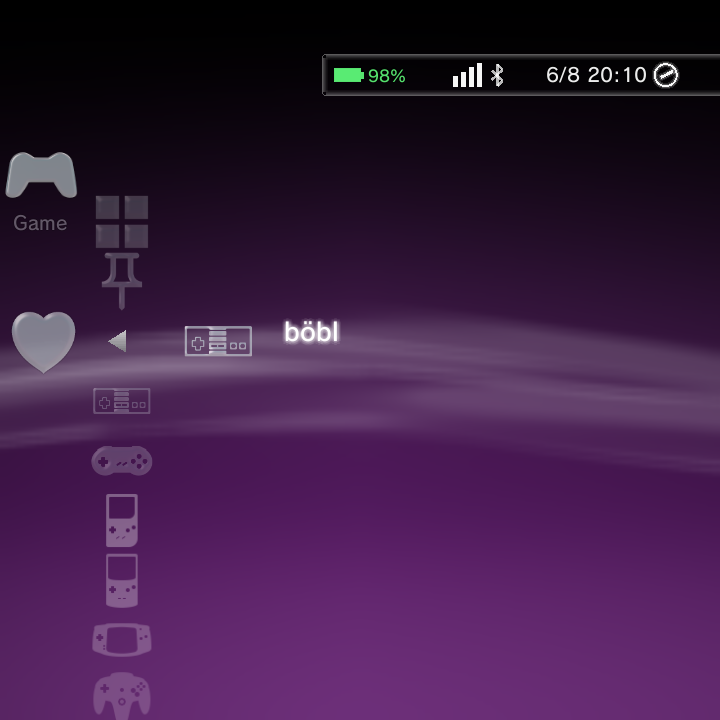
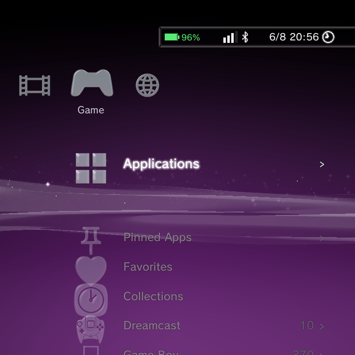

Collections let you gather games from any system into your own named groups, like Favorites or Multiplayer. Nano also keeps a global Favourites list and a Recently Played list for you automatically, so the game you just closed is always one tap away.
Favourites
Favourites is a single, cross-system starred list. It gives you one quick place for the games you play most, without building a named collection first.
- Highlight any game, press the Options button, and choose Add/Remove from Favorites to star or unstar it. The same option toggles it back off.
- Starred games gather into one Favorites list under the Game category, above your collections and systems. Games from different systems sit together in the one list.
- The Favorites list appears automatically when you star your first game, and disappears again when you unstar your last. There is nothing to create or delete.
- The Favorites row uses a heart icon, so it is easy to spot in the Game category.

Favourites and Collections are separate features. A game can be a favourite and also belong to any number of collections at the same time.
Collections
A collection is a group of games you choose yourself. Games can come from any system, so a single collection can mix NES, SNES, and PlayStation titles together. Each collection shows up as its own entry in the Game category, right alongside your systems.

Creating a collection and adding games
You build a collection from a game's Options menu:
- Highlight a game and press the Options button.
- Choose Add to Collection.
- Create a new collection (type a name with the keyboard) or pick an existing one.
The game is added, and if you created a new collection it appears in the Game category. Repeat for any other games you want in it.
A game can belong to several collections at once. Adding it to one does not remove it from any other.
Managing collections
- To remove a game from a collection, open the game's Options menu while you are inside that collection and choose Remove from Collection.
- To rename or delete a whole collection, highlight the collection entry, press the Options button, and choose Rename Collection or Delete Collection.
Deleting a collection only removes the grouping. Your game files and the games themselves in your library are untouched.
For the full list of Options-menu actions on games and collections, see Context Menus.
Recently Played
Nano keeps a Recently Played list for you automatically. There is nothing to set up.
- Every game you launch is tracked here.
- The game you just played jumps to the front of the list, so it is always first.
- If a game is deleted, or scanned away when you run Rescan Games, it is quietly removed from the list.
Recently Played entries behave just like normal games: press the Options button on one to Start it, view its Information, add it to a collection, and more.
Related pages
- Context Menus for every Options-menu action.
- Adding Games for building your library.
- Boxart & Metadata for cover art and game info.